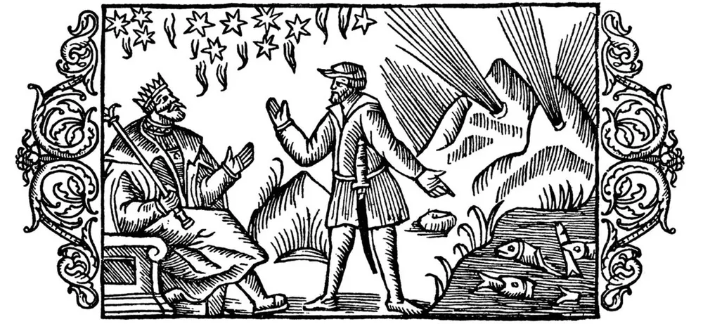
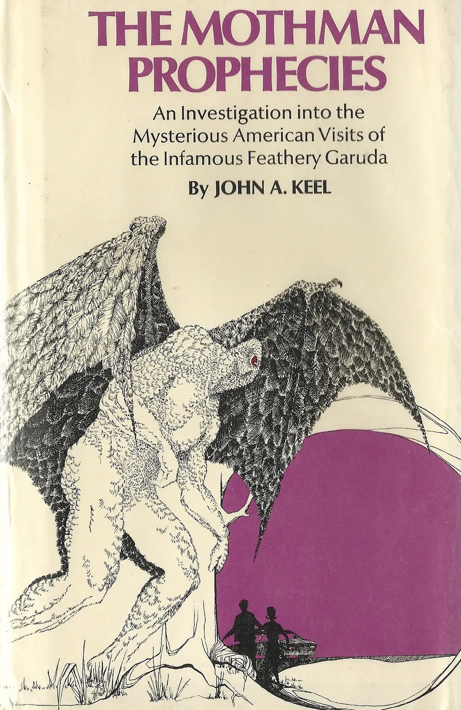

This dossier is about a testable human phenomenon rather than a claimed event. Failed prophecy is one of the best-studied situations in the social science of belief, and the results are more surprising than “people are gullible”.
2012 and the Mayan calendar
In 2012 a global audience waited for the end of a 5,126-year cycle in the Maya Long Count, which completed on 21 December. The claim was that the Maya had predicted an apocalypse. They had predicted a cycle ending — the equivalent of a calendar rolling over to a new page.
The BBC’s reporting at the time noted the mundane reality and the commercial one: the date generated tourism, documentaries and merchandise across Mexico and Guatemala, and the Maya themselves were largely not impressed. There was no prophecy of destruction in the inscriptions, and the date was never a countdown to anything.
The non-event is instructive because of how it dissolved: not with a refutation, but with a shift. The date became “a change in consciousness”, “the beginning of a new era”, “a shift in vibration”. The prediction was unfalsifiable in the end because it had been restated as a mood.
The Millerites and the Great Disappointment
William Miller, a Baptist preacher in upstate New York, calculated from the book of Daniel that Christ would return around 1843–44. He gave a specific date in October 1844. Tens of thousands of followers — estimates around 50,000 — prepared. Some gave away property.
The date passed. The event is known as the Great Disappointment, and it is the founding case study of millennial failure. Miller himself took the unusual step of admitting error: “I confess my error and acknowledge my disappointment.”
Most of his followers did not simply go home. A minority produced the “shut door” explanation — the date was right, but the event was spiritual rather than visible — and out of the wreckage came the Adventist movement, which is now a global religion. This is the key structural fact: a failed prophecy can be the birth certificate of a durable institution.
Festinger, and the honest caveat
In 1956 Leon Festinger, Henry Riecken and Stanley Schachter published When Prophecy Fails, based on a small group led by a woman they called “Mrs Keech”, who believed a flood would arrive and a flying saucer would rescue the faithful. When neither came, the group did not disband: the leader announced that their light had saved the world, and members began proselytising.
The book gave us cognitive dissonance: when a belief collides with evidence, people often reduce the discomfort by recruiting others to the belief rather than abandoning it. That idea became one of the most influential in psychology.
A 2025 paper by Thomas Kelly argues that Festinger’s account misrepresented the group’s behaviour before and after the prediction, and that the group actually did disband soon afterwards. Later work by Lorne Dawson and others reaches similar conclusions. The theory of cognitive dissonance survived; the founding case study is weaker than the textbook version.
That is how intellectual honesty is supposed to look, and it is worth putting next to the material in the rest of this archive: the famous study of failed prophecy is itself partly a case of a story being better than its evidence.
Nostradamus, and the technique of vagueness
Michel de Nostredame published his Les Propheties in 1555 as quatrains — four-line poems in deliberately obscure French, Latin and Provençal, with no dates and no named subjects. That is not a flaw in the design; it is the design.
A text with no fixed referent can be matched to any event after the fact. Every generation finds its own catastrophe in the same 942 quatrains, and every match requires knowing the event first. The technical name for the failure is retrofitting, and the reason it feels persuasive is that the reader supplies the specificity the text lacks.
1. A date. Specific enough to be exciting, vague enough to be survivable.
2. A total claim. It affects everyone, not just believers — which is why it recruits.
3. A ready explanation. The date was symbolic / the event was spiritual / the prayer averted it. Prepared in advance or invented that week.
When all three are present, the prediction cannot lose. When the third is missing — as with Miller — you get an honest admission and a schism.
What actually ends the world
For the record, and without prophecy: the Sun's evolution, an impact event, and the eventual loss of a habitable atmosphere are the well-studied long-term hazards. The one with a date is the Sun's brightening, on a timescale of about a billion years. Nothing in the archive predicts it, and nothing needs to.
Sources for this page
- BBC News, “Mayan prophecies: Life after the (non) end of the world” (2012) — Festinger summarisedbbc.com
- Kelly, T. (2025), “Failed Prophecies Are Fatal” — the problems with When Prophecy Fails (PDF)bahai-library.com
- Dawson, L. (1999), “When Prophecy Fails and Faith Persists: A Theoretical Overview” (PDF)gwern.net
- American Millennial Studies, “Spiritualization and Reaffirmation” — the Millerites and 1844 (PDF)journals.ku.edu
- The New Yorker, “Is Cognitive Dissonance Actually a Thing?” (2025)newyorker.com
Open resources on this topic
- BookProphets and Prophecies — Joseph Dheilly · 1964 (Internet Archive, free to read)
- BookGOD' S PROPHECIES; WOW, REALLY — Marco Armbruster · 2021 (Internet Archive, free to read)
- BookAmighty Wind | End Time Jewish Messianic Pentecostal Ministry, Prophecies, End Times Truth, Songs, Video's — Amighty Wind (Internet Archive, free to read)
- PapersOpen-access articles: DOAJ · PubMed Central · Internet Archive Scholar
- BooksPublic-domain and borrowable copies: Open Library · Project Gutenberg · Google Books
More images

Olaus Magnus - On the Art of Prophecy
Olaus Magnus · Public domain · Commons
"The Mothman Prophecies", by John A. Keel
Jacket design by Peter Parnell · Public domain · Commons


Cite this page
Momin, S. (2026). Prophecies. The Larger World Archive. https://drsamonline.github.io/LARGE_GLOBE/prophecies.htmlMomin, Sohil. “Prophecies.” The Larger World Archive, 2026, https://drsamonline.github.io/LARGE_GLOBE/prophecies.html.Momin, Sohil. “Prophecies.” The Larger World Archive, 2026. https://drsamonline.github.io/LARGE_GLOBE/prophecies.html.@misc{prophecies2026prophecies,
author = {Momin, Sohil},
title = {Prophecies},
year = {2026},
howpublished = {The Larger World Archive},
url = {https://drsamonline.github.io/LARGE_GLOBE/prophecies.html},
note = {Last reviewed 20 November 2026}
}Last reviewed 20 November 2026 · Corrections policy · this page is not peer reviewed